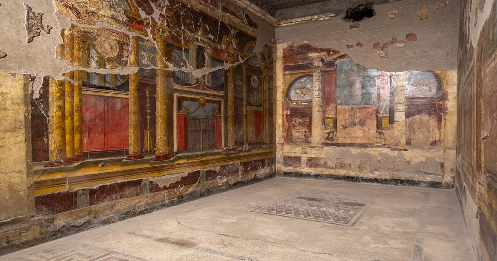

Ученые узнали, что ели люди перед извержением Везувия
Кости помогают рассказать не только о возрасте и здоровье человека, но и о продуктах, которые он предпочитал.
Недавно благодаря анализу останков жертв извержения Везувия удалось восстановить основные источники пищи жителей древнеримского города Оплонтис.